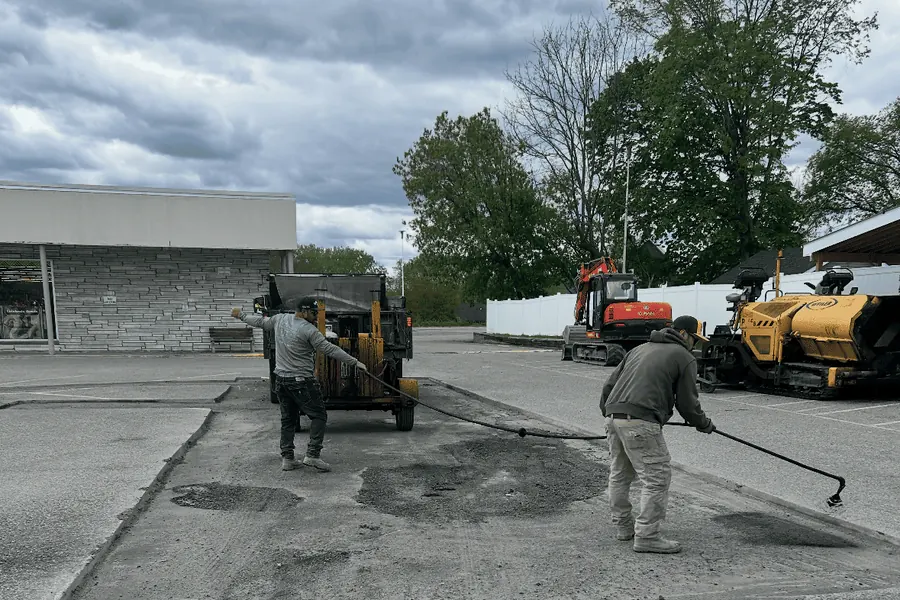
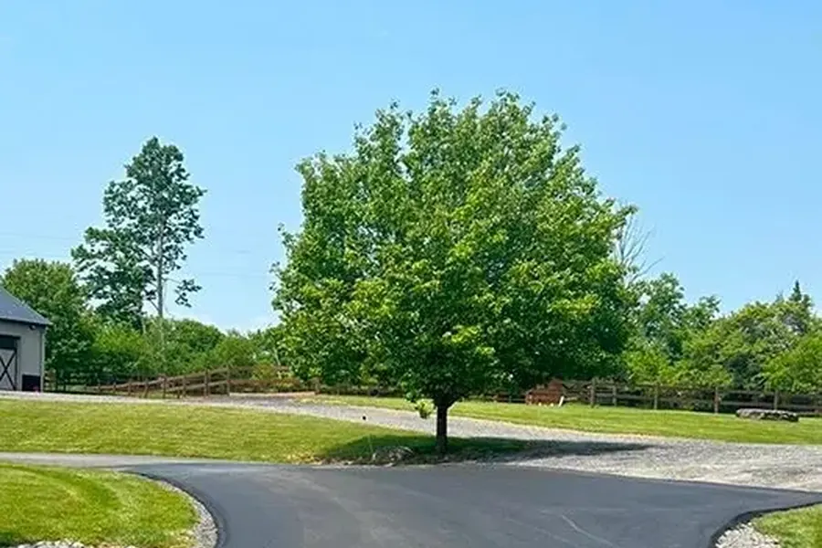

Pavement lifecycle · Saratoga County
Asphalt paving
and resurfacing
RDM Construction manages the full pavement lifecycle for driveways, parking lots and access roads across Saratoga Springs and the Capital Region. New installation, overlays, pothole and crack repair, milling, full depth reclamation, sealcoating and ADA compliant striping all run on one contract with one crew.
Pavement numbers for upstate New York
Most pavement failures start before the potholes
Small surface cracks let water below the asphalt. Freeze thaw cycles then work on the base from underneath, and the structure weakens before anything visible happens on top. By the time you see widespread cracking, pooling water or loose aggregate, the deterioration usually covers more area than it appears to.
Timing is the whole game. Early maintenance extends pavement life at a fraction of the cost of replacement. The following are the signs that the window is closing.
- Cracks are spreading past isolated surface areas
- Water still sits on the pavement hours after rain
- Edges are breaking down or crumbling under traffic
- Parking lot traffic patterns have become unclear or unsafe
- Small repairs are getting more frequent year over year
- Sections of pavement are sinking or separating
Maintenance or structural?
Not every pavement problem takes the same solution, and treating them the same is how property owners end up paying for a fix that fails early. Traffic volume, drainage performance, sub base stability, surface age and the pattern of cracking all decide which category a surface falls into.
If sealcoating or patching will extend the life of your surface cost effectively, we will tell you that instead of selling a full repave.
The four ways to bring a surface back
Ordered from lightest intervention to heaviest. The right one depends entirely on whether the failure is in the surface or in the base underneath it.
Asphalt overlay and resurfacing
An overlay adds a fresh layer of hot mix, typically 1.5 to 2 inches, over pavement whose base is still structurally sound. It runs roughly half the cost of full replacement and works well when the damage is cosmetic rather than structural. We prepare the existing surface, repair localized soft spots, and apply a tack coat so the new layer bonds instead of delaminating.
The qualifier is base condition. Resurfacing over a compromised base buys you a cosmetically new surface that mirrors the old cracks within a season or two. We assess the base before recommending it, and we say plainly when full replacement is what the surface actually needs.
Asphalt milling
Milling removes a controlled depth of the existing asphalt with a rotating drum and hauls the millings off site. It exists to solve a specific problem: on a lot or driveway that has already been overlaid, or one that meets a garage slab, a curb line or a drainage structure at a fixed elevation, you cannot simply add two more inches on top without breaking the grade.
Milling takes the surface back down so the new layer finishes at the correct height, keeps water draining where it was designed to drain, and gives the overlay a clean, textured surface to bond to. It is also the right approach when only the top layer has oxidized and the material below it is still sound.
A cold planer uses a rotating drum with carbide tipped teeth to grind to a precise depth and grade, typically 1.5 to 2 inches for surface replacement, loading the material straight onto a truck by conveyor. Your property is left clean rather than stacked with broken asphalt for a week. What comes off is not waste: reclaimed asphalt pavement is one of the most recycled construction materials in the country, and it goes back to a plant to be blended into new hot mix.
Once the surface is off we inspect the exposed sub base for soft spots and drainage problems before anything gets paved over them, then apply a liquid tack coat so the new asphalt bonds properly. Milling only work runs roughly $0.50 to $2.00 per square foot, and milling plus repaving runs $3 to $7 depending on thickness and site conditions. A standard 1,000 to 2,000 square foot residential driveway is usually milled and repaved in one day.
Mill rather than overlay when the surface has widespread cracking, rutting or deformation, when previous overlays have already raised the pavement against curbs, drains or a garage slab, when drainage grades need re-establishing, or when you need a uniform level surface for clean striping and ADA compliance.
Pulverizing and full depth reclamation
Full depth reclamation is the answer when the base has failed across the whole surface. Rather than hauling out the old asphalt and trucking in new stone, the existing pavement is ground up together with a portion of the base beneath it, then graded and compacted in place as the new base. Fresh asphalt goes over that.
The advantage is that it recycles the failed pavement into the structure instead of sending it to a landfill and paying to replace it, which usually makes it the cheaper route on a large area with widespread alligator cracking. It also removes the reflective cracking problem, because the old crack pattern no longer exists as a continuous layer.
Pothole patching and crack sealing
Potholes get cleaned back to stable edges, tack coated, then packed and compacted with hot mix, not cold pour filler that pops out in the first hard freeze. Cracks get filled with hot pour rubberized sealant, which stays flexible through the freeze thaw cycle instead of cracking alongside the joint it was meant to close.
Both are maintenance rather than repair of a structural problem. If potholes keep returning in the same spot, the base under that spot has failed and patching it again is money spent on the wrong problem.
New installation
New asphalt for driveways, parking lots and access roads starts with excavation to depth, drainage planning, and a compacted crushed stone base. In this climate the base is what determines lifespan. Asphalt laid on an uncompacted or poorly drained base will fail regardless of how well the surface was finished.
Why the sequence matters
Crack filling, then sealcoating, then striping. Run out of order, sealer goes over open cracks and new paint goes under a coat that has not cured. Running all three under one contract is what keeps the order right.
Commercial properties
Retail plazas, office parks, medical facilities, light industrial sites and multi unit residential properties, scheduled around your operating hours where the site allows it. See commercial services.
Paving work across the Capital Region
Driveways, parking lots and access roads in Saratoga Springs, Malta, Wilton and Ballston Spa.


Paving questions we get in Saratoga Springs
How do I know whether my lot needs sealcoating, resurfacing or full repaving?
Sealcoating works on structurally sound asphalt with surface oxidation and minor cracking. Resurfacing, meaning an overlay, addresses heavier surface deterioration but still requires a solid sub base. Full repaving is the answer once the base itself has failed, which usually shows up as widespread alligator cracking, sinking sections, or potholes that keep returning in the same place. We assess surface and base condition on every estimate.
What is the lifespan of an asphalt parking lot in upstate New York?
A properly installed and maintained asphalt lot typically lasts 20 to 30 years before full replacement. Sealcoating on a two to three year cycle and prompt crack repair are the two steps that move that number the most.
What is the best time of year to pave in the Capital Region?
Late May through September. Asphalt work needs sustained temperatures above 50 degrees Fahrenheit during placement and compaction. We do not lay new asphalt when rain is forecast inside 24 hours, or when overnight lows are expected below 50 degrees.
Can you combine crack repair, sealcoating and striping in one visit?
Yes, and for a commercial property it is the efficient way to run it. The sequence is crack filling first, then sealcoating, then line striping once the sealer has cured, typically 24 to 48 hours later. One mobilization, one invoice, minimal disruption.
What is the difference between milling and pulverizing?
Milling removes a controlled depth of the existing asphalt surface and hauls the millings off, which resets grade before an overlay and keeps the finished elevation where it needs to be. Pulverizing grinds the asphalt and part of the base together and leaves the material in place as the new compacted base. Milling is a surface correction. Pulverizing is a base rebuild.
Do you work on both residential driveways and commercial lots?
Yes. Residential driveways, commercial lots, light industrial sites and access roads across Saratoga County and the surrounding counties. Every job gets a site assessment and a written estimate before work starts.
Where we work
The Greater Capital Region of New York State. If your address is not on this list, call and we will confirm coverage.
- Saratoga County
- Saratoga Springs, Wilton, Malta, Ballston Spa, Clifton Park, Mechanicville, Stillwater, Greenfield, Galway, Milton and Round Lake
- Albany County
- Albany, Colonie, Guilderland, Bethlehem, Cohoes, Watervliet, Latham and Loudonville
- Schenectady County
- Schenectady, Niskayuna, Glenville, Rotterdam and Scotia
- Rensselaer County
- Troy, East Greenbush, North Greenbush and Rensselaer
Free estimate. Written, itemized, no obligation.
Tell us the property, the problem, and a photo if you have one. We come out, assess the site, and send a written number. Call, text, or email and we will get you on the schedule.